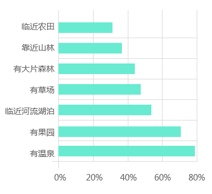

背景篇
现实背景
慢病与压力
雾霾与疾病
城市化与城市病
老龄化社会
健康活力
释放身心
医疗康复
修心养性
优美环境
饮食安全

延年益寿
亲密关系
政策背景
“健康中国”成为国家战略，“大健康”产业成为经济发展的新引擎
2015年，继提出建设“美丽中国”之后，“健康中国”战略被首次写入政府工作报告，并上升为国家战略，与“美丽中国”、“平安中国”一起成为“十三五”规划的三大关键词，开启了“大健康”时代的新蓝海。2030大健康产业时代+：普及健康生活、优化健康服务、完善健康保障、建设健康环境、发展健康产业为重点，加快推进健康中国建设
“把人民健康放在优先发展的战略地位”――习近平 “中国将成为健康产业最大市场” ――李克强
保障 养老服务供地
支持 民间资本参与养老服务业
促进 医养融合发展
推进 健康中国建设
培育 健康旅游消费市场
高端医疗旅游
中医药特色旅游
文化养生旅游
银发养老旅游
体育康体旅游
……政策解读
一系列重磅政策持续加码，我国康养产业迎来黄金发展期，引导和推动康养旅游产业的发展
- 2013
-
大力发展养老服务业
国务院《关于加快养老服务业发展的若干意见》35号文件:提出大力发展养老服务业，满足养老服务多样化、多层次需求。为康养产业发展带来重大战略机遇。
- 2014
-
保障养老用地，发展健康养老服务
国土资源部《养老服务设施用地指导意见》:保障养老服务设施用地供应，大力支持养老服务业发展。保障民间资本投资养老服务设施的建设用地需求，积极做好用地服务工作。
国务院《关于促进健康服务业发展若干意见》：大力发展医疗服务，加快发展健康养老服务，积极发展健康保险等，促进健康服务业高效发展。
- 2015
-
鼓励民间资本参与产业发展
民政部、发改委等十部门《关于鼓励民间资本参与养老服务业发展的实施意见》：明确要求对民办养老机构提供的育养服务免征营业税，养老机构在资产重组过程中涉及的不动产、土地使用权转让，不征收增值税和营业税。
- 2016
-
开放养老服务市场，完善养老服务体系，促进康养与旅游产业融合
国务院办公厅《关于全面开放养老服务市场提升养老服务质量的若干意见》（2016）――91号文:到2020年养老服务市场全面开放，养老服务和产品有效供给能力大幅提升，供给结构更加合理，服务质量明显改善，群众满意度显著提高，养老服务业成为促进经济社会发展的新功能。
国务院《国民经济和社会发展第十三个五年规划纲要》：积极应对人口老龄化，建立多层次养老服务体系。全面放开养老服务市场，增加养老服务和产品供给。
国务院发布《“健康中国2030”规划纲要》：应积极促进健康与养老、旅游、互联网、健身休闲、食品融合，催生健康新产业、新业态、新模式。制定健康医疗旅游行业标准、规范，打造具有国际竞争力的健康医疗旅游目的地。大力发展中医药健康旅游。
- 2017
-
促进旅游改革，推动健康旅游产业发展，保障产业用地供应
国家五部委《关于促进健康旅游发展的指导意见》：提出了“五个发展”以进一步推动健康旅游产业的发展，同时加大对健康旅游产业的政策支持，使之更合法、更规范。
二十五部委《关于推进老年宜居环境建设的指导意见》：重点建设适老居住、出行、就医、养老等的物质环境和包容、支持老年人融入社会的文化环境。
国务院印发《关于促进旅游业改革发展的若干意见》:积极培育壮大市场主体，扶持特色旅游企业，大力发展老年旅游。结合养老服务业、健康服务业发展，积极开发多层次、多样化的老年人休闲养生度假产品。
市场背景
康养旅游度假市场拥抱一个规模达万亿的蓝海，迎来大发展时代
市场诉求
健康诉求，意识日益增强――亚健康、慢性病、情绪病、老龄化、空巢老人、养老危机不断严峻；
中产崛起，旅游消费升级――到2016年我国中产阶级人数达1.09亿名，超过美国，居全球第一位。
产业蓝海
产业规模巨大――《大健康十大投资热点市场规模预测》显示到2020年健康服务产业总规模要达到8万亿。
发展空间巨大――2017年全球健康旅游产业规模占世界旅游收入的16%，而我国养康养旅游占旅游交易总规模的1%左右。
企业布局
2016年胡润中国百富榜前十的富豪中，至少有6位公开表示正在布局大健康产业领域。
主要涉及三大领域，医药健康、康养地产、互联网和人工智能信息技术。
马云已抢先入局健康产业，直言：“中国下一个首富，一定在大健康领域”。
市场现状与趋势
一系列康养问题拉动养生需求，聚焦银发养老、康复医疗、保健养生、美容康体四大人群市场
社会科学文献出版社、中国老龄协会（全国老龄办）人才信息中心、中山大学旅游学院联合发布的我国首本康养蓝皮书《中国康养产业发展报告（2017）》中提出：康养的核心功能在于尽量提高生命的长度、丰度和自由度。这三个维度下，从健康到亚健康再到病患甚至是需要临终关怀的群体都有必要纳入康养的范围。
目前我国康养市场呈“人口老龄化现状严峻、疾病年轻化趋势加快、亚健康比例持续上升、健康人群美容健身意识崛起”四大发展趋势。
银发养老
保健养生
康复医疗
美容康体
银发养老客群
以情感满足、身心关怀为需求，规模大、消费能力强，对康复、保健、温泉养老关注度更高
需求特征：渴望参加团体活动，关注生活环境及内心归属，关注情感满足，关注个人健康，对基本医疗设施需求。
度假目的地特征：老年娱乐活动/专业医护/保健医疗
人口规模
老龄化形势严峻，养老规模庞大、需求旺盛。
购买能力
老人购买力增强，提供了强大的消费支撑
养老服务偏好
康复护理、贴身照料、精神慰藉等养老方面需求强烈。
养老环境偏好
更偏好温泉、农园、湖泊类型的养老环境。
度假设施选择
除生活设施外，对保健类设施有强烈需求。
康复医疗客群
以体检医治、康复疗养为主要需求，中医诊疗方式最受欢迎
旅游消费动机――治疗某种疾病或不适，为获得：费用低廉医疗服务、高品质医疗服务、差异化医疗服务
度假目的地特征：医院/诊所/医学水疗/专业医护
产品需求以重症治疗为主，其中康复体检项目也呈现快速发展趋势，其次不同年龄段侧重不同康疗需求，超过半数消费者更加偏好中医诊疗方式
国内医疗诊疗规模
康疗产品需求统计
不同年龄段需求
诊疗体检方式偏好
保健养生客群
由青年白领群体主导消费，以修身养心、养生保健为需求，偏好中医类养生理疗项目
消费动机：修身养性，缓解压力，消除负面情绪、通过养生理疗减轻生理上的不适、身体各项机能的回复与恢复调理
度假目的地特征：SPA养生/休息寓所/修行/矿泉浴/漫游
亚健康问题突出，亚健康群体持续壮大，其中31-35岁白领亚健康群体养生消费需求空前
亚健康人群年龄段分布
项目类型
不同性别及养生项目偏好
养生理疗产品
更偏好生理类养生项目，压力管理、排毒减肥、养生教学等项目在男女两性中都较受欢迎
在众多养生理疗产品中更加偏好中医食疗、理疗类型产品
美容康体客群
中青年为消费主体，以美容健身为需求，偏好生态体验类运动健身项目
消费动机：通过运动锻炼追求健康的生活方式、希望达到特色的健康提升效果、居住地不可获得的专业化美容保健类服务
度假目的地特征：SPA养护/运动健身/专业医疗美容/冥想瑜伽等身心锻炼
2017算数健康大会预测出2018年国人”最in健康生活方式“关键词排行：广场舞.瑜伽.马拉松.情绪管理.尬舞 自然疗法.音乐疗法.肚皮舞.太极拳
美容健身人群多集中在26-30岁段，其中对康体健身的需求受性别影响更小，需求更广泛
年龄结构图
不同性别偏好
自然区位环境、康养项目对目的地选择有重要影响，偏好生态步行、禅修、农事体验等项目
目的地关注因素
各类康体活动偏好
目标客群
银发养老客群
- 度假目的
- 避暑避寒、延年益寿、身心关怀
- 产品偏好
- 康复护理、保健医疗、养老地产…
康复医疗客群
- 度假目的
- 体检医治、康复疗养、身心愉悦
- 产品偏好
- 健康检查、康复理疗、医疗医药、膳食疗养…
保健养生客群
- 度假目的
- 修身养心、养生保健、品质生活
- 产品偏好
- 绿色生态环境、养生文化体验、康养美食、温泉SPA…
美容康体客群
- 度假目的
- 美颜整容、运动健身、释放压力、高雅生活
- 产品偏好
- 美容养颜、高端时尚运动、传统文化养生运动…
国内外视野
国外发展历程
由市场引导从资源依托到产业导入，逐步发展为以具备核心竞争力与独特卖点的康养产品为核心，综合开发
国际养生旅游业已具规模，在很多国家都形成了具有核心竞争力和独特卖点的产品,例如日本的温泉养生、印度的阿育吠陀和瑜伽养生、泰国的美体养生、法国的庄园养生、瑞士抗衰老养生以及韩国的美容养生和奥地利阿尔卑斯高山养生等等。
市场引导阶段
产品竞争阶段
格局形成阶段
优势资源驱动发展
温泉资源开发为主
- 驱力：
认为矿泉有治疗疾病的作用 - 发展：
巴斯小镇、巴登巴登等地温泉洗浴发展
资源开发多样化
依托生态资源开发
- 驱力：
逃避工业城市化带来的一系列问题 - 发展：
滨海养生、SPA养生、农场养生兴起
产品类型特色化
特色产业植入开发
- 驱力：
满足旅行者放松、平衡的生活状态 - 发展：
逐渐出现以健身活动与医疗护理项目为特征的产品
格局已逐渐成型
综合功能开发为主
- 驱力：
追求高品质康养旅游度假目的地，康养项目升级换代。 - 发展：
具备一定规模，很多国家都形成了具有核心竞争力和独特卖点的产品
全球著名康养胜地
| 项目 | 区位条件 | 规模 | 年游客量 | 开放时间 | 旅游功能 | 康养主题特色 | 主要康养产品 | 其他旅游产品 | 其他度假产品 | 产品类型 | 开发模式 |
|---|---|---|---|---|---|---|---|---|---|---|---|
| 普罗旺斯 | 法国南部普罗旺斯 | 31400KM2 | ― | ― | 生态观光 养生度假 文化旅游 |
薰衣草故乡 葡萄酒庄园 骑士抒情诗发源地 |
静池SPA Sault修道院 |
艾克斯市大学城 波城古堡 |
Club Med 薰衣草博物馆 |
生态养生 | 资源依托 |
| 墨西哥坎昆度假村 | 墨西哥尤卡坦半岛东北端 | 840公顷 | 1000万 | 1975年 | 国际会议 文化体验 休闲度假 |
图伦遗址 多色海面 卡尔门海滩 |
日光浴 海洋温泉SPA 静心养生垂钓 |
卡尔门海滩 玛雅文化探寻 |
高尔夫运动场 三大主题公园 |
||
| 德国巴登巴登度假小镇 | 黑森林西北部的边缘上 | ― | 300万 | 1838年 | 温泉疗养 国际会议 旅游度假 |
罗马浴池的遗址 天然矿泉结合 |
卡勒卡拉浴池 500公里的步行径希腊式休养院 |
巴登巴登音乐厅 博拉姆斯故居 |
巴登巴登赌场 Iffezheim赛马会 |
||
| 意大利巴尔卡洛岛 | 意大利南部 | 58KM2 | ― | ― | 泥浴养生 生态观光 |
火山岛屿 熔岩泥浆美容养颜 |
熔岩泥浴 | 岛屿探秘之旅 | ― | ||
| 泰国道苑疗养度假村 | 泰国清迈市郊北麓 | 200亩 | ― | 1997年 | 医疗养生 休闲度假 |
道教气功/冥想/气息调节法 | 内调养生项目 外炼养生项目 |
道教研习课程 道家养生膳食 医疗服务 |
星级住房 太极馆/泳池/球馆等各类运动场馆 |
文化养生 | |
| 印度普纳奥修国际静心村 | 穆拉河和穆塔河的交汇处 | 16.2公顷 | 100万 | 1974年 | 文化旅游 康体养生 |
身心治疗 心灵静修中心 |
印度瑜伽体育课程 有机素食餐厅 |
花园瀑布 奥林匹克级泳池 |
各国风情餐厅 静心住宿区 |
运动康体 | 产业驱动 |
| 新西兰皇后镇 | 新西兰南岛瓦卡蒂普湖北岸 | 293KM2 | 200万 | 1947年 | 运动度假 乡村休闲 |
米尔福德峡湾 高空弹跳运动发源地 滑雪高地 |
高山滑雪场 高空弹跳 生态徒步/登山 |
热气球 喷射快艇 空中缆车 |
瓦尔特高原牧场 山谷酒庄 新西兰风情餐厅 |
||
| 瑞士蒙特勒医疗养生城 | 瑞士沃州日内瓦湖东岸 | 41.37KM2 | 30万 | 20世纪40年代 | 观光旅游 医疗养生 运动度假 |
羊胎素美容圣地 浪漫爵士之都 |
抗老医疗体验 温泉SPA会所 |
西庸城堡 莱芒湖 蒙特勒爵士乐节 |
葡萄庄园 蒙特勒滑雪场 |
医疗康复 | |
| 瑞士达沃斯小镇 | 瑞士东南部格里松斯地区 | 283KM2 | 230万 | 19世纪 | 运动度假 医疗养生 会议旅游 |
阿尔卑斯空气最洁净地区 国际冬季运动中心 |
高山滑雪场 天然冰场 达沃斯康复中心 |
木偶和玩具博物馆 体育运动博物馆 基尔希纳美术馆 |
达沃斯博彩中心 雪场露天咖啡 |
生态+运动 | 综合开发 |
| 奥地利奥茨山谷 | 奥地利西部蒂罗尔州 | 67公里长 | 350万 | 19世纪 | 运动度假 温泉养生 |
欧洲著名滑雪天堂 最温暖秀丽的游泳湖 顶级滑雪胜地 |
阿夸多姆温泉理疗中心 瑟尔登滑雪场 |
007光影元素电影体验馆 | 高山温泉度假酒店 007餐厅ICE Q |
国内发展分析
由政策逐步转向市场主导发展，下阶段可参照国外发展模式，发展独具中国康养特色的综合度假产业
自由发展期
国家政策布局阶段
市场主导期
产品竞争期
养生意识诉求产生
资源依托开发
- 九十年代依托极致化优势养生资源开发疗养型旅游产品，服务于国家干部、国际友人等小部分人群。
养生旅游产业兴起
资源依托开发
- 2002年海南三亚最早大规模兴起保健康复旅游
- 浙江、江西、安徽、黑龙江、山东、广西等地先后开展养生旅游活动论坛，打造养生基地。
养生养老带头发展
产业驱动开发
- 驱力：2013年起,国家出台若干政策大力发展养生养老产业
- 发展：旅居养老、养老度假产业迅速发展
养生形式多样化
资源依托开发
- 驱力：2015《中医药健康服务发展规划》
- 2016《“健康中国2030”规划纲要》推进健康中国建设
- 发展：中医药文化、民俗文化、宗教禅修养生形式不断兴起
主题康养度假发展
功能综合开发
- 驱力：老龄化人口增多，国民健康水平下降，国民健康意识崛起
- 发展：借良好的生态本底+高新技术，打造以康养为特色的综合型养生度假区
康养产品不断完善
形成具有核心吸引力的
中国特色康养旅游度假
国内著名康养胜地
| 项目 | 区位条件 | 投资 | 规模 | 年游客量 | 开发时间 | 旅游功能 | 康养主题特色 | 主要康养产品 | 其他旅游产品 | 其他度假产品 | 产品类型 | 开发模式 |
|---|---|---|---|---|---|---|---|---|---|---|---|---|
| 三亚市亚龙湾旅游度假区 | 海南省三亚市吉阳区 | 19亿 | 18.6KM2 | 450万 | 1992年 10月4日 |
生态观光 休闲度假 康体养生 |
热带气候 银白色海滩 |
滨海浴场 海上运动中心 |
图腾文化广场 亚龙湾贝壳馆 亚龙湾蝴蝶谷 |
海底观光世界 游艇俱乐部 高尔夫球场 |
生态养生 | 资源依托 |
| 长白山国际旅游度假区 | 白山市抚松县松江河镇 | 230亿 | 18.34KM2 | 223万 | 2009年 8月28日 |
生态观光 山地度假 康体养生 |
高热温泉 长白山脉原始山地森林 黄金滑雪度假带 |
滑雪服务中心 医疗温泉洗浴 |
矿泉城工业游 长白山大峡谷 |
室内水上游乐园 长白山娱雪白桦会所 |
||
| 巴马长寿养生国际旅游区 | 广西壮族自治区西北部 | 360亿 | 16177KM2 | 434万 | 2013年 | 生态观光 地质旅游 养生度假 |
世界长寿之乡 岩溶地质奇观 地下河天窗群 |
长寿养生基地 药浴养生中心 |
七百弄地质奇观游 红水河百里画廊游 |
壮瑶原生态文化体验区 红水河垂钓基地 |
||
| 巢湖半汤温泉度假区 | 安徽省巢湖市半汤镇汤山脚下 | 8亿 | 7.5公顷 | 100万 | 2013年 | 温泉度假 康体养生 |
含氮及硫盐类的高热泉 冷热合流半汤泉水 |
养生谷 汇智谷 逍遥谷 |
月湖晚泉 金巢银泉 |
露天温泉旅游池 会议会展中心 |
||
| 南京汤山温泉旅游度假区 | 南京市江宁区汤山街道 | 230亿 | 29.74KM2 | 1000万 | 2008年 | 生态观光 温泉度假 康体养生 |
皇家御用温泉 碑泉洞湖寺一体 |
健康养生中心 汤山温泉 |
南京猿人洞 阳山碑材遗址 |
欢乐水魔方水上乐园 | ||
| 武当太极湖旅游度假区 | 湖北省西北部武当山 | 180亿 | 57KM2 | 888万 | 2008年 | 旅游观光 休闲娱乐 养生度假 |
中国道教圣地武当山 人工湖丹江口水库 |
太极养生谷 武当功夫城 山地运动公园 |
新遗产公园 武当山旅游码头 |
太极小镇 游艇俱乐部 |
文化养生 | |
| 无锡太湖国家旅游度假区 | 无锡市西南端的马迹山半岛 | 50亿 | 51.4KM2 | 300万 | 1980年 | 文化遗产 生态观光 养生度假 |
马迹山半岛 灵山大佛 |
太湖疗养院 太湖赛马场 云居道院 |
宜民山庄 慕湾生态园 |
踏青农庄 古竹风情街 |
||
| 山东庆云宫养生度假区 | 山东省德州市庆云县 | 3.5亿 | 1.5公顷 | --- | 2015年 | 文化养生 休闲度假 |
道教文化仿古建筑群 马颊河卧龙岗景区 |
清修疗养区 田园养心区 道家文化体验地 |
田园风光带 民俗风情区 |
休闲养生城 养生酒庄 |
||
| 武夷山国家旅游度假区 | 福建省西北部武夷山 | 20亿 | 12KM2 | 1200万 | 1992年 | 文化遗产 地质观光 避暑度假 |
三教名山 丹霞地貌 古闽族文化 |
儒释道宗教游 康复医疗保健中心茶文化之旅 |
武夷山紫阳古城 古汉城遗址 |
欢乐茶城 极地海洋公园 |
||
| 青城山国际旅游度假区 | 四川省成都市都江堰市 | 366亿 | 708KM2 | 750万 | 2016年 8月26日 |
文化体验 养生度假 旅游观光 |
道家文化发源地 | 百草园产业基地 马拉松健身长廊 中华道教园 |
大熊猫生态旅游基地 水文化博物馆 |
沐氧休闲长廊 健身美体中心 |
小结
借鉴国外发展经验，国内康养度假将逐步发展至产品竞争阶段
需要摆脱过度依赖资源开发且产品类型单一的现状
打造世界范围内具有竞争力与独特卖点的康养度假产品
国外康养度假
- 发展阶段：市场引导期 → 产品竞争期 → 格局成型期
- 开发模式：依托资源开发与导入多样化产业开发为主，综合开发并存
- 产品类型：生态、文化、体育、医疗等多类型养生产品
国内康养度假
- 发展阶段：自由发展期 → 政策引导期 → 市场引导期
- 开发模式：依托资源开发为主，逐步导向综合开发
- 产品类型：生态文化类养生产品为主
4大目标客群
- 银发养老客群
- 康复医疗客群
- 保健养生客群
- 美容康体客群
3大开发类型
- 资源依托型
- 产业驱动型
- 综合开发型
6类产品形态
- 自然资源养生类
- 文化资源养生类
- 运动康体类
- 医疗康复类